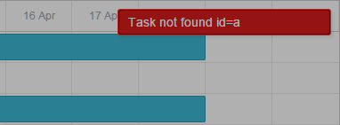

The distributive of the component includes a demo backend app that can be used to run samples locally. The app requires Node.js and uses in-memory storage for demos which supposed to store data on the backend (i.e. no database setup is needed).
1) Use the demo Node.js-based backend app:
npm installnpm run starthttp://localhost:9200 in your browser2) Use Apache web server
3) Use a development web server built-in into your IDE
Some IDEs provide a built-in development web server, for example:
https://www.jetbrains.com/help/webstorm/creating-local-server-configuration.html.
You can look up whether the IDE you use supports something similar either out of the box or via plugins.
Some of the examples in our package load their data from JSON files using AJAX (xhr). In order for it to work, an example must be opened from a web server.
If you open an example by a double click, it will be opened by a browser as a file. In this mode a browser will block AJAX calls and the component won't be able to load data files. You'll see the Invalid data popup at the top right corner of the screen.
In order to make sure the described behavior is actual for your case, you can check the URL in the navigation panel of the browser. If the file:/// format is used in the URL, e.g.:
file:///D:/www/gantt-eval/samples/11_resources/09_resource_histogram.html
you can be sure that's the case. Samples that load data from files won't work in this mode.
When you open an example from a web server, the URL will look like this (http:// may be omitted):
http://localhost/gantt-eval/samples/11_resources/09_resource_histogram.html
If the Gantt chart wasn't rendered on the page properly, please, check a CSS style for the chart's container - it must have a valid size in pixels or percents.
html, body{
margin:0px;
padding:0px;
height:100%; /*mandatory*/
overflow:hidden;
}
If the Gantt chart wasn't rendered on the page properly only in the Internet Explorer browser, please, make sure that your page uses a full DOCTYPE declaration. dhtmlxGantt can work correctly in the standard modes of IE6, IE7 and IE8 but isn't purposed to be used with the quirks modes of IE.
For example, HTML5 DOCTYPE is:
<!DOCTYPE html>
Firstly, you need to find out what causes the error.
The messages appear when the component can not perform properly. They usually indicate a real issue with the data or with the application logic. So simply hiding them will only camouflage the issue while it can appear in other parts of the app.
However, you may want to disable these messages before shipping your application to end users. In this case you can use the show_errors config:
gantt.config.show_errors = false;
There are two most obvious scenarios:
1. You try to implement the backend API either manually or following our tutorials, but Gantt doesn't show any tasks or links when you open the page.
or
2. You have troubles with saving changes to the backend.
Read the Troubleshooting Backend Integration Issues article that gives instructions on how to identify the reasons of the problems.
Back to top